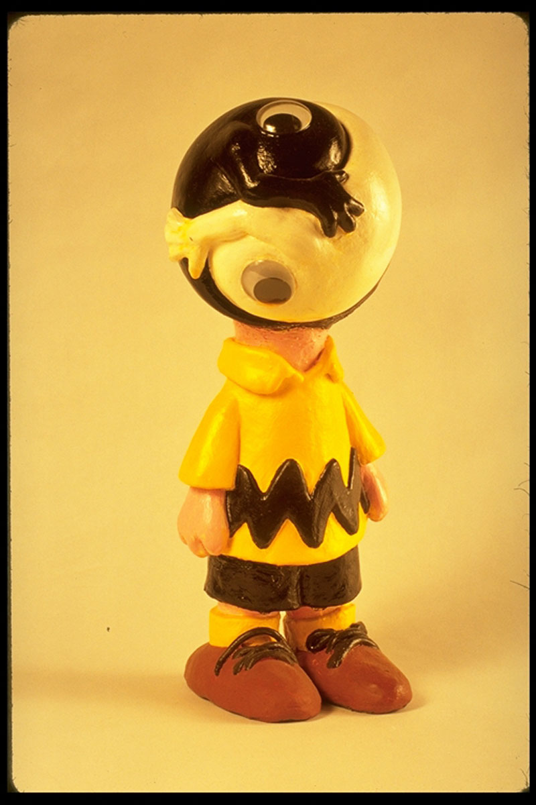
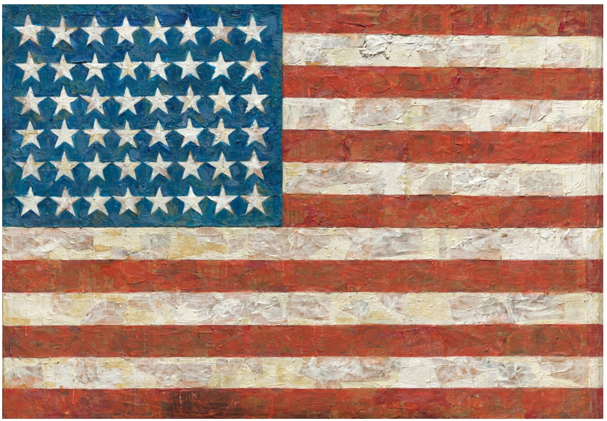

Literature
Ron English, Popaganda: The Art & Subversion of Ron English (San Francisco: Last Gasp, 2001), p. 99. ISBN 1-887128-60-3.
Notes
Dimensions are approximate and are based on visual comparison and available documentation.
In Popaganda, this work was erroneously reported as 38 × 624 inches.
This work references the Peanuts character Charlie Brown, created by Charles M. Schulz.
This work also references Jasper Johns’s Flag.
Reference model created by Ron English for this work.
Ancillary Documentation
The following materials document the artist’s reference model and source imagery connected to the work.


